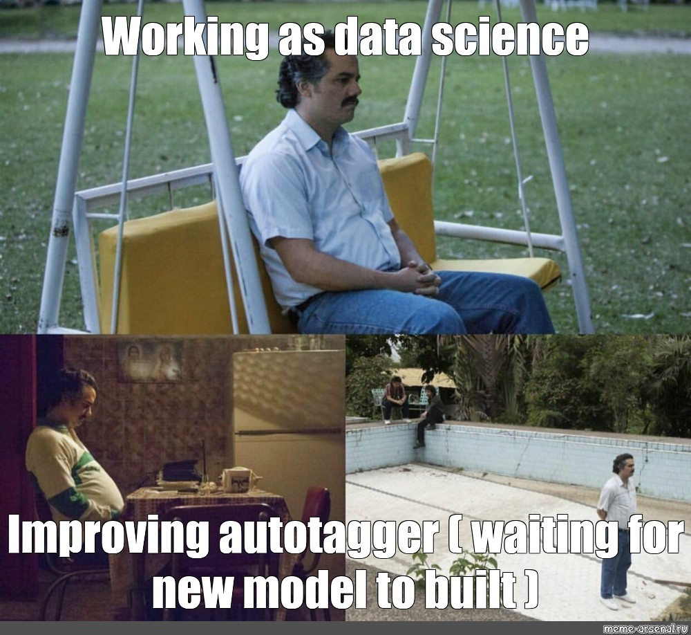
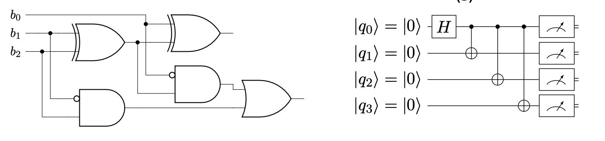
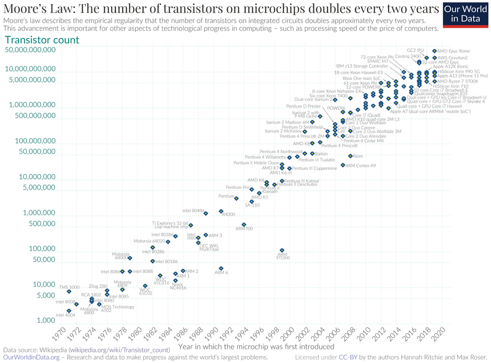
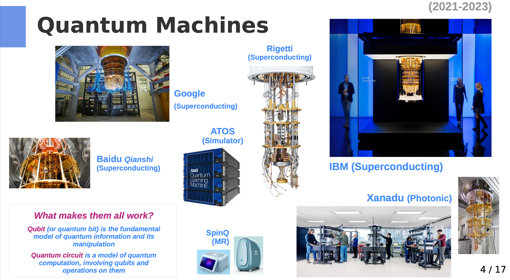
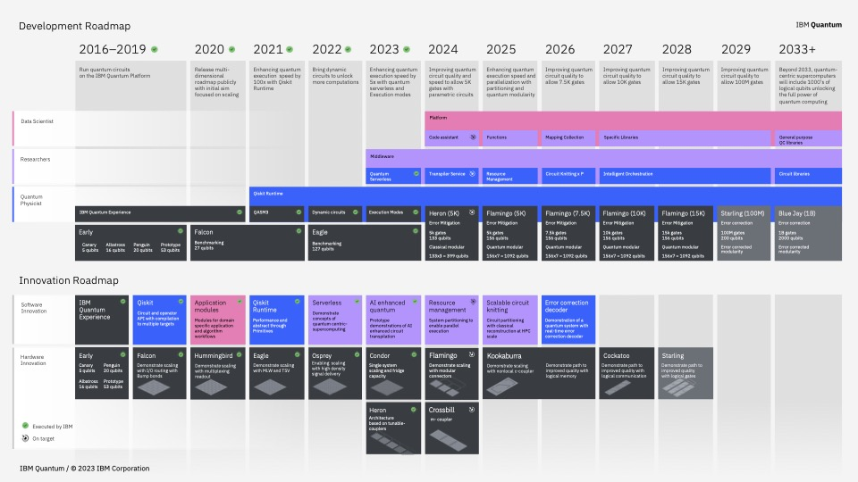
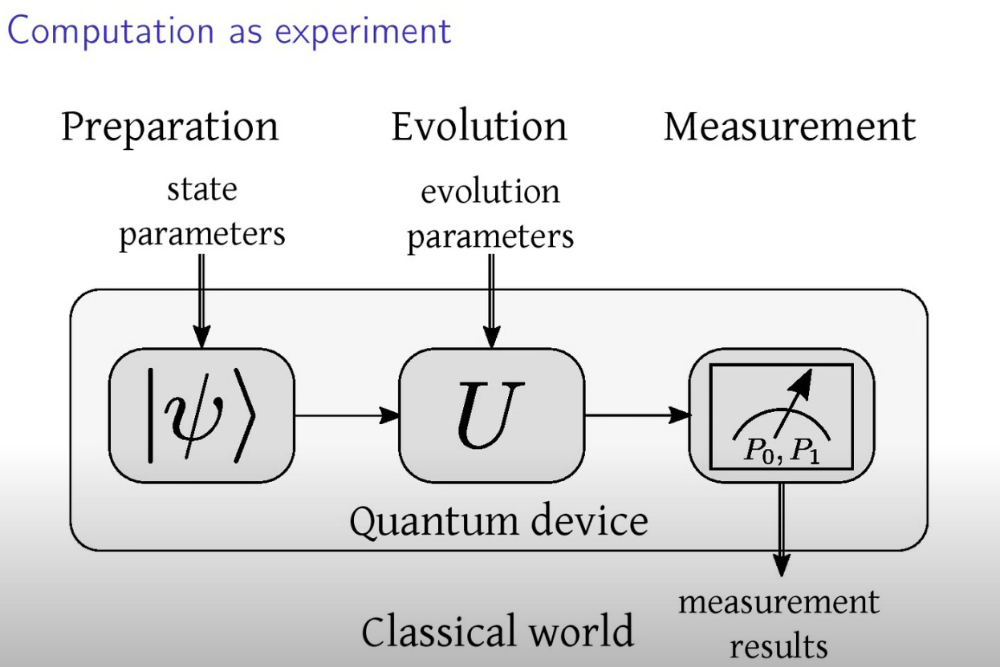
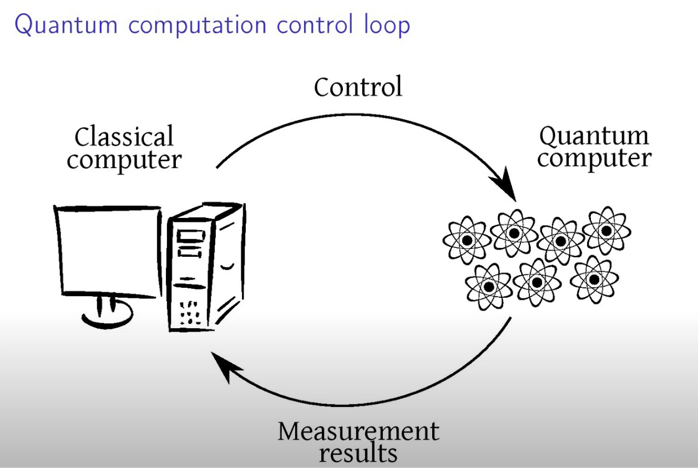
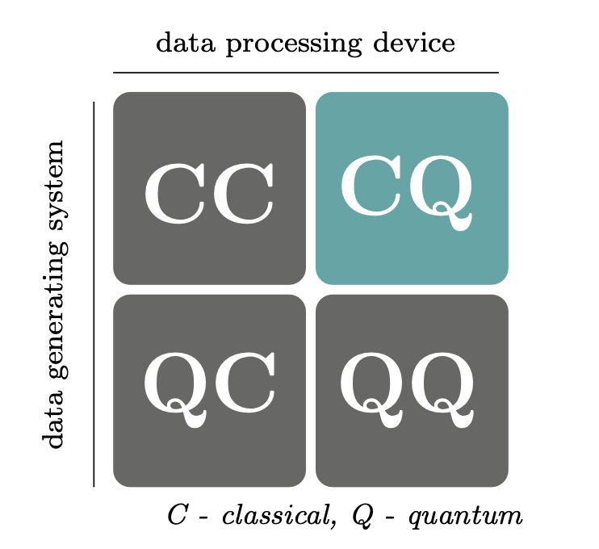

Komputery klasyczne i kwantowe
Nature isn’t classical, dammit, and if you want to make a simulation of Nature, you’d better make it quantum mechanical, and by golly it’s a wonderful problem because it doesn’t look so easy. Richard Feynman
Zanim zaczniemy
Co oznacza termin kwantowe uczenie maszynowe?
Co wiesz o obliczeniach kwantowych?
Jakie masz oczekiwania i dlaczego interesujesz się QML?
Podstawowe pojęcia
Uczenie maszynowe (w tym także uczenie głębokie) to dziedzina, która łączy naukę i technikę, pozwalając komputerom uczyć się na podstawie danych. Dzięki temu mogą one rozwiązywać problemy, których tradycyjne programowanie nie byłoby w stanie efektywnie rozwiązać – ze względu na złożoność, brak wzorców lub dynamicznie zmieniające się dane. Zamiast ręcznie programować konkretne rozwiązania, algorytmy uczą się na podstawie dostępnych danych, aby samodzielnie znaleźć wzorce i optymalne odpowiedzi. Więcej na ten temat znajdziesz w książce
Obliczenia kwantowe to interdyscyplinarna dziedzina wykorzystująca świat nauki kwantowej (fizyki, chemii) i technologii. Rozwija takie dziedziny jak: projektowanie algorytmów, teoria obliczeń złozonych, optymalizacja, architektura systemów komputerowych, czy tworzenie sprzętu komputerowego.
Warto zauważyć, że klasyczne komputery (bazujące na tranzystorach) również działają zgodnie z prawami mechaniki kwantowej, jednak wykonywane przez nie operacje opierają się na klasycznej logice.
Oba podejścia – klasyczne i kwantowe – odgrywają kluczową rolę w przetwarzaniu danych zarówno dziś, jak i w niedalekiej przyszłości. Zatem nasuwa się naturalne pytanie: jak można te dwa światy ze sobą połączyć?
Xanadu link - what is quantum computing
Kwantowe uczenie maszynowe (ang. Quantum Machine Learning) to zastosowanie metod uczenia maszynowego, które mogą być realizowane na komputerach kwantowych. Wykorzystuje ono zjawiska mechaniki kwantowej, takie jak superpozycja i splątanie, aby potencjalnie przyspieszyć procesy uczenia i rozwiązywania problemów, które dla klasycznych komputerów mogą być zbyt złożone.
you start with classical mechanics and electrodynamics, solving lots of differential equations at every step. Then you learn about the “black-body paradox” and various strange experimental results, and the great crisis these things posed for physics. Next you learn a complicated patchwork of ideas that physicists invented between 1900 and 1926 to try to make the crisis go away. Then, if you’re lucky, after years of study you finally get around to the central conceptual point: that nature is described not by probabilities (which are always non-negative), but by numbers called amplitudes that can be positive, negative, or even complex. Scott Aaronson, Quantum Computing Since Democritus
Sztuczna inteligencja

Historia sztucznej inteligencji (AI) sięga 1950 roku, kiedy Alan Turing zaproponował swój słynny test Turinga. Od tamtej pory rozwój technologii AI przyspieszył, obejmując zarówno dane ustrukturyzowane, jak i nieustrukturyzowane. Przykłady zastosowań AI obejmują:
- rozpoznawanie i generowanie mowy,
- ,,rozumienie’’ obrazów i filmów,
- rozgrywanie gier (np. szachy, Go),
- systemy rekomendacji (np. w e-commerce),
- diagnostykę (np. w medycynie),
- planowanie i optymalizację procesów,
- podejmowanie decyzji,
- chatboty i wirtualnych asystentów.
Wszystkie te zadania są realizowane dzięki zastosowaniu uczenia maszynowego (Machine Learning) oraz głębokich sieci neuronowych (Deep Learning).
Dlaczego sztuczna inteligencja jest tak chętnie wykorzystywana?
- Wykładniczy wzrost ilości danych treningowych, dostępnych m.in. dzięki mediom społecznościowym, Internetowi, aplikacjom mobilnym i urządzeniom IoT.
- Wzrost mocy obliczeniowej oraz spadek kosztów sprzętu komputerowego (np. co-procesorów GPU, TPU).
- Dostępność oprogramowania typu Open Source, ułatwiającego rozwój AI.
- Przewaga konkurencyjna, jaką zyskują firmy wykorzystujące AI w porównaniu do tych, które tego nie robią.

Uwaga! Zakładam, że masz podstawową znajomość pojęć związanych z uczeniem maszynowym i głębokim, ale w razie potrzeby, będziemy przypominać kluczowe zagadnienia.
Kategorie uczenia maszynowego
Uczenie maszynowe (ang. Machine Learning) można podzielić na kilka głównych kategorii:
Uczenie nadzorowane (ang. supervised learning) – mając oznaczone dane \((x_i, y_i)\) , uczymy model, który znajdzie funkcję \(f(x_i) = y_i\) , aby poprawnie przewidywać wartości dla nowych, nieznanych danych. Przykłady obejmują decyzje o przyznaniu kredytu lub klasyfikację obrazów, takich jak rozpoznanie, czy na obrazie znajduje się kot, czy pies.
Uczenie nienadzorowane (ang. unsupervised learning) – mając nieoznaczone dane (x_i) , szukamy ukrytych struktur w danych, takich jak grupowanie (klasteryzacja) czy redukcja wymiarów. Celem jest odkrywanie zależności lub wzorców, które nie są jawnie widoczne.
Uczenie przez wzmacnianie (ang. reinforcement learning) – agent uczy się podejmować decyzje w środowisku na podstawie nagród i kar, optymalizując swoje działania w celu maksymalizacji długoterminowych korzyści. Przykłady obejmują gry komputerowe, sterowanie robotami czy optymalizację procesów biznesowych.
Uczenie transferowe (ang. transfer learning) – technika, która polega na wykorzystaniu wiedzy nabytej w jednym zadaniu do rozwiązania innych, podobnych zadań. Przykładem jest model językowy nauczony rozumienia języka naturalnego, który może być wykorzystany do innych zadań, takich jak tłumaczenie maszynowe, analiza sentymentu czy rozpoznawanie tekstu pisanego.
Uczenie pół-nadzorowane (ang. semi-supervised learning) – podejście, które łączy dane oznaczone (z etykietami) i nieoznaczone (bez etykiet) w celu trenowania modelu. Jest to przydatne, gdy dostępnych jest dużo danych nieoznaczonych, ale tylko niewielka część z nich ma przypisane etykiety.
Klasyczny model obliczeń
Komputer to fizyczne urządzenie, które przetwarza informacje za pomocą obwodów elektronicznych (ang. electronic circuits). Jego działanie opiera się na klasycznej logice binarnej, w której informacje są reprezentowane przez bity przyjmujące wartości \(0\) lub \(1\). Komputery klasyczne wykonują obliczenia, przetwarzając te bity za pomocą zestawu logicznych operacji, takich jak \(AND\), \(OR\), \(NOT\), oraz innych.
Komputery klasyczne opierają swoje działanie na:
- Procesorach (CPU – Central Processing Unit), które wykonują instrukcje programu.
- Pamięci (RAM – Random Access Memory), która tymczasowo przechowuje dane potrzebne do obliczeń.
- Magazynach danych, takich jak dyski twarde (HDD) lub półprzewodnikowe dyski (SSD), które służą do trwałego przechowywania danych.
- Obwodach logicznych, zbudowanych na podstawie tranzystorów, które tworzą podstawowe elementy przetwarzania danych.
Komputery klasyczne są niezwykle wydajne w rozwiązywaniu szerokiego spektrum problemów, zwłaszcza tych, które dają się łatwo zredukować do logicznych operacji lub operacji arytmetycznych. Jednakże, w miarę wzrostu złożoności problemów, ich wydajność może być ograniczona przez dostępne zasoby obliczeniowe i czas.

Algorytmy (programy komputerowe – ang. software) to sekwencje logicznych i matematycznych kroków, które definiują sposób rozwiązywania problemów lub wykonywania obliczeń przy użyciu komputera. Algorytmy są abstrakcyjnymi przepisami, które programy komputerowe implementują, aby przetwarzać dane i osiągać zamierzone cele. Wykorzystują one zasoby obliczeniowe komputera, takie jak procesor, pamięć i dysk, do wykonywania zadań w określonej kolejności i z określoną efektywnością.
Prawo Moore’a
Prawo Moore’a to obserwacja, że liczba tranzystorów na mikroczipie podwaja się mniej więcej co dwa lata, podczas gdy jego koszt zmniejsza się o połowę w tym samym okresie. Wzrost mocy mikroprocesorów jest wykładniczy.
Zwiększenie szybkości działania oraz pojemności klasycznych komputerów co dwa lata pozwala na szybsze i bardziej złożone obliczenia przy niższych kosztach. Jednak w ostatnich latach obserwujemy, że prawo Moore’a zbliża się do swoich fizycznych ograniczeń. Miniaturyzacja tranzystorów staje się coraz trudniejsza, co sugeruje, że dalszy wzrost mocy obliczeniowej komputerów tradycyjnych może być trudniejszy do osiągnięcia w dotychczasowy sposób.

Fizyczne (klasyczne) ograniczenia dla procesorów
- Rozmiary tranzystora: Rozmiary tranzystorów zbliżają się do skali atomowej. W latach 90-tych tranzystory miały rozmiar około 500 nm, obecnie mają około 14 nm, a najnowsze technologie osiągają nawet 7 nm. Dalsze zmniejszanie rozmiarów napotyka na ograniczenia związane z fizyką materiałów.
- Prędkość światła: Jest to maksymalna prędkość przesyłu informacji w tradycyjnych układach komputerowych. Ogranicza to szybkość, z jaką dane mogą być przesyłane pomiędzy komponentami procesora i pamięci.
- Wysoki koszt wytwarzania: Proces produkcji nowoczesnych układów scalonych jest bardzo kosztowny. To skłania do rozwoju układów wieloprocesorowych i rozwiązań z większą liczbą rdzeni w celu zwiększenia wydajności bez konieczności ciągłego zmniejszania tranzystorów.
- Efekty kwantowe: Gdy tranzystory stają się coraz mniejsze, pojawiają się efekty kwantowe, które mogą wpływać na ich działanie. Te efekty stają się istotne, gdy rozmiar tranzystora zbliża się do skali atomowej. Komputery kwantowe są próbą obejścia tych ograniczeń.
- Wysoki pobór mocy: Zmniejszanie rozmiarów tranzystorów często prowadzi do zwiększenia gęstości obliczeniowej, co z kolei zwiększa pobór mocy i generuje więcej ciepła.
- Generowanie ciepła: Zaawansowane komputery wykonujące intensywne obliczenia generują znaczne ilości ciepła. Problemy z chłodzeniem mogą wpływać na wydajność i niezawodność systemu, co wymaga innowacji w zakresie rozwiązań chłodzących.
- Wykorzystanie rzadkich materiałów: Produkcja mikroprocesorów i układów scalonych wymaga rzadkich materiałów i zasobów, co może stanowić wyzwanie dla zrównoważonego rozwoju technologii komputerowych.
Dla większości praktycznych zastosowań opis makroskopowy oraz klasyczne teorie fizyczne są wystarczające do opisu właściwości prądu w obwodach elektrycznych. Jednak gdy celem jest realizacja obliczeń wykorzystujących mikroskopowe właściwości obiektów, klasyczny opis przestaje być adekwatny.
W takich przypadkach konieczne jest zwrócenie się ku mechanice kwantowej, która jest najdokładniejszym i najbardziej powszechnie stosowanym modelem opisującym mikroświat. Komputer, który realizuje obliczenia zgodnie z zasadami mechaniki kwantowej, nazywamy komputerem kwantowym.
Dzięki zdolności do wykorzystania zjawisk kwantowych, takich jak superpozycja i splątanie, komputery kwantowe mogą rozwiązywać problemy, które są trudne lub wręcz niemożliwe do rozwiązania za pomocą klasycznych komputerów. Komputery kwantowe oferują obiecującą technologię, która otwiera nowe możliwości w dziedzinie obliczeń oraz nauki.
Obliczenia kwantowe
Film wprowadzający: link
Nowy paradygmat obliczeń kwantowych wykorzystuje unikalne cechy interferencji, superpozycji i splątania do realizacji obliczeń. Obecnie realizowany jest w trzech głównych modelach:
- Quantum Circuits (Obwody Kwantowe) - oparty na modelu bramkowym, pozwala realizować algorytmy typu QAOA, VQA oraz metody hybrydowe.
- Adiabatyczne Obliczenia Kwantowe (D-Wave) - polegające na minimalizacji energii, wykorzystując optymalizację QUBO i analogię do modelu Isinga.
- Topologiczne Komputery Kwantowe - oparte na topologicznych kubitach.
Nie za krótkie wprowadzenie do fizyki kwantowej
Termin Mechanika Kwantowa (MK) jest często używany zamiennie z teorią kwantową, choć istnieją również inne teorie kwantowe, takie jak Kwantowa Teoria Pola (ang. quantum field theory), które wykraczają poza zakres standardowej mechaniki kwantowej.
Mechanika Kwantowa przewiduje wyniki eksperymentów przeprowadzanych na układach kwantowych, tj. mikroskopowych obiektach fizycznych, dla których fizyka klasyczna nie jest wystarczająca do opisania ich zachowania. Przykładem może być atom wodoru. MK opisuje zachowanie takich obiektów jak fotony, elektrony oraz kwantowe bity (qubity).
Warto zaznaczyć, że Mechanika Kwantowa jest fundamentem, na którym opiera się wiele innych teorii i dziedzin fizyki, w tym teorie kwantowe stosowane w obliczeniach kwantowych.
Na naszym wykładzie nie będziemy koncentrować się na fizycznych właściwościach kubitów, lecz ograniczymy się do znajomości ich pewnych, abstrakcyjnych stanów, w jakich mogą się znajdować. Stany te będą numerowane liczbami naturalnymi.
Fizyka klasyczna jest zazwyczaj traktowana jako graniczny przypadek mechaniki kwantowej. Mimo to, w praktyce fizycy często oddzielają te dwie dziedziny i stosują odpowiednią teorię do odpowiednich problemów. Na przykład, w konstrukcji mostów wykorzystuje się fizykę klasyczną, a nie mechanikę kwantową.
Warto również zaznaczyć, że wyniki mechaniki kwantowej mają charakter probabilistyczny, co może prowadzić do błędnego przekonania, że mechanika kwantowa jest teorią statystyczną. W rzeczywistości mechanikę kwantową można raczej uznać za uogólnienie klasycznej definicji prawdopodobieństwa.
Historia fizyki kwantowej
Początki Mechaniki Kwantowej sięgają prac Maxa Plancka (1900) i Alberta Einsteina (1905), którzy wprowadzili pojęcie kwantu - najmniejszej jednostki energii. Rozwój tej dziedziny związany jest z badaniami wielu wybitnych naukowców, takich jak Niels Bohr, Erwin Schrödinger, Louis de Broglie, Werner Heisenberg, Paul Dirac, Richard Feynman i wielu innych.
Szczegółowe informacje na temat historii obliczeń kwantowych można znaleźć w artykule o obliczeniach kwantowych.
Informatyków zazwyczaj nie interesuje, jak dokładnie fizyczne właściwości układów są wykorzystywane do przechowywania informacji w komputerze klasycznym. Podobnie, nie muszą oni zgłębiać fizycznego mechanizmu, dzięki któremu informacja kwantowa jest realizowana w komputerze kwantowym. Tak jak prowadząc samochód, nie zastanawiasz się nad działaniem każdej jego części, tak samo pisząc kod, nie musisz interesować się, jak został on zaimplementowany w bibliotece. Informatycy często koncentrują się na efektywnym wykorzystaniu technologii komputerowych, a nie na szczegółach ich fizycznej realizacji.
Realizacja komputerów kwantowych

Historia obliczeń kwantowych
- 1936: Alan Turing opublikował pracę On Computable Numbers, która stanowiła istotny krok w kierunku teoretycznych podstaw obliczeń (Hilbert Problems) - universal computing machine
- 1976: Roman S. Ingarden opublikował artykuł Quantum Information Theory, wprowadzając pojęcie teorii informacji kwantowej, co miało kluczowe znaczenie dla rozwoju komputerów kwantowych.
- 1980: Paul Benioff przedstawił teoretyczną koncepcję komputerów kwantowych jako fizycznych systemów, otwierając drzwi do praktycznych implementacji.
- 1981: Richard Feynman zwrócił uwagę na to, że klasyczne komputery nie są w stanie efektywnie symulować procesów kwantowych.
- 1985: David Deutsch opracował pierwszy opis kwantowej maszyny Turinga oraz algorytmy przeznaczone do uruchamiania na komputerach kwantowych, w tym bramki kwantowe.
- 1994: Peter Shor opracował algorytm faktoryzacji liczb w czasie wielomianowym, co miało znaczenie dla kryptografii i bezpieczeństwa informacji.
- 1996: Lov Grover stworzył algorytm Grovera, który okazał się wyjątkowo efektywny w przeszukiwaniu stanów kwantowych.
- 2000: Zbudowano pierwszy komputer kwantowy (5 qubitów) oparty na nuklearnym rezonansie magnetycznym, co stanowiło ważny krok w rozwoju fizycznych platform komputerów kwantowych.
- 2001: Demonstracja algorytmu Shora potwierdziła praktyczność i znaczenie algorytmów kwantowych.
- 2007: Firma D-Wave sprzedała pierwszy komercyjny komputer kwantowy, co miało wpływ na rozwój technologii komputerów kwantowych w sektorze prywatnym.
- 2019: 23 października, Google ogłosił uzyskanie tzw. quantum supremacy na 53 kubitach.
- 2020: Zespół Jian-Wei Pana z University of Science and Technology of China dokonał przełomu, realizując 76 fotonowych kubitów na komputerze Jiuzhang.
- 2022: Firma Xanadu dokonała znaczących postępów w dziedzinie technologii komputerów kwantowych.
- 2023: Pojawienie się pierwszego logicznego qubitu? (wymaga dalszych szczegółów lub aktualizacji)
- 2024: Google - Pierwsze zadowalające wyniki z kwantowej korekcji błędów
Od około 1990 roku fizycy i informatycy pracują nad fizyczną realizacją komputerów kwantowych. Jednym z popularnych modeli obliczeń na komputerach kwantowych jest model oparty na kwantowych obwodach (ang. quantum circuits), który wykorzystuje qubity zamiast klasycznych bitów.
Podobnie jak w przypadku obwodów klasycznych, w modelu kwantowym definiuje się bramki kwantowe (ang. quantum gates), które umożliwiają wykonywanie operacji na qubitach.
Fizyczna konstrukcja komputera kwantowego, a właściwie qubitu, jest zadaniem nietrywialnym, ponieważ wymaga manipulacji bardzo małym układem, który jest zazwyczaj wyjątkowo wrażliwy na wszelkie oddziaływania z otoczeniem. Efektem tych oddziaływań jest pomiar układu, który prowadzi do przejścia do jego stanu własnego (co oznacza zniszczenie przygotowanego stanu, np. superpozycji). Efekt ten nazywa się dekoherencją.

Dlaczego chcemy używać komputerów kwantowych?
Zasadnicze pytanie brzmi: na ile komputery kwantowe mogą faktycznie poprawić jakość modeli uczenia maszynowego i czy umożliwią realizację zadań, które są poza zasięgiem klasycznych komputerów.
Co o tym sądzisz?
Moja i książkowa odpowiedź: To zależy:
- jaki problem chcemy rozwiązać?
- jakie dane są dostępne i jakiej są natury?
- jaki typ analizy chcemy przeprowadzić?
- jaki typ komputera kwantowego wykorzystujemy (np. NISQ czy pełnoskalowy komputer kwantowy)?
- co rozumiemy przez “lepiej”? Precyzja, czas obliczeń, koszt, skalowalność, zużycie energii, a może coś innego?
Kwantowa Złożoność (Quantum Complexity)
Problemy, które klasycznie są trudne do rozwiązania, takie jak optymalizacja, mogą być realizowane szybciej przez komputery kwantowe. Przykładem jest faktoryzacja liczb.
Podstawowym faktem przewagi komputerów kwantowych nad klasycznymi jest tzw. parallelizm. Dzięki temu, że kubity mogą znajdować się w superpozycji stanów, komputer kwantowy może przeprowadzać obliczenia jednocześnie na wszystkich stanach. Co dokładnie to oznacza, poznamy w dalszej części wykładu.
Rozważmy sytuację, w której chcemy poznać działanie funkcji \(f(x)\) dla pewnego argumentu \(x\) . Aby znaleźć wynik dla dwóch liczb (np. \(x = 0\) i \(x = 1\)), klasyczny komputer musi wykonać dwie operacje. Komputer kwantowy może uzyskać ten wynik, przeprowadzając obliczenia jednocześnie dla obu wartości. Do wykonania takiej operacji wystarczy jeden kubit.
Jeśli chcemy obliczyć naszą funkcję dla kolejnych liczb \(x = 2\) (które binarnie reprezentowane jest jako 10 ) oraz liczby \(x = 3\) (binarnie 11 ), musimy dodać kolejny kubit. Dwa kubity mogą posłużyć do realizacji czterech równoległych operacji. Jeśli rozważymy 3 kubity, możemy podwoić liczbę operacji (3 kubity mają 8 stanów bazowych). Dodanie kubitu do komputera kwantowego pozwala podwoić liczbę równoległych obliczeń. W przypadku klasycznego komputera, aby uzyskać taki efekt, trzeba by podwoić liczbę bitów. Generalnie, n -kubitów może realizować 2^n równoległych obliczeń.
Druga istotna koncepcja w obliczeniach kwantowych to pamięć.
W klasycznych komputerach (np. 64-bitowy laptop) każda liczba może być reprezentowana w 64-bitowej formie (rozszerzenie reprezentacji 8-bitowej). Jeśli chcemy przechować 4 liczby w tej reprezentacji, potrzebujemy \(4 \times 64 = 256\) bitów pamięci na twardym dysku. Generalnie, dla \(M\) liczb potrzebujemy \(M \times 64\) bitów pamięci.
W przypadku komputerów kwantowych operujących na \(n\)-kubitach, sytuacja wygląda inaczej. Możemy przechowywać \(2^n\) różnych współczynników, traktując taki stan jako pamięć. W odróżnieniu od klasycznej pamięci, gdzie ilość bitów pamięci jest liniowa w stosunku do liczby przechowywanych danych, pamięć realizowana na kubitach jest funkcją logarytmiczną od liczby liczb.
Przykładowo, dla \(n\)-kubitów, komputer kwantowy jest w stanie przechować \(2^n\) stanów, co jest równoważne \(2^n\) różnym współczynnikom. Tak więc, liczba kubitów potrzebnych do przechowania dużej ilości informacji rośnie znacznie wolniej niż liczba bitów w klasycznych komputerach.
Współczesne klasyczne komputery są bardzo zaawansowane i mogą zawierać dziesiątki terabajtów pamięci, co pozwala im na symulację niewielkich układów kwantowych. Największe klasyczne komputery są w stanie symulować układy do około 46 kubitów. Dla porównania, obecnie IBM oferuje komputery kwantowe oparte na 127 kubitach, a nawet rozwijają technologie dla układów z 1000 kubitami.
Pamięć w komputerach kwantowych jest znacznie bardziej efektywna w przechowywaniu informacji w porównaniu do klasycznych komputerów. Dzięki możliwości reprezentowania wielu stanów jednocześnie, komputery kwantowe oferują potencjalnie ogromne możliwości obliczeniowe przy znacznie mniejszych wymaganiach pamięciowych.
Kwantowa Korekcja Błędów (Quantum Error Correction)
Dekoherencja, czyli oddziaływanie kwantowego systemu z jego otoczeniem, może zniszczyć stan komputera kwantowego i wprowadzać błędy obliczeniowe. Aby zapewnić integralność obliczeń w komputerach kwantowych, konieczne jest zastosowanie technik korekcji błędów.
Kwantowa korekcja błędów (Quantum Error Correction) jest kluczowym obszarem badawczym w dziedzinie obliczeń kwantowych, który zajmuje się identyfikowaniem i korygowaniem błędów w systemach kwantowych. W przeciwieństwie do klasycznych systemów komputerowych, gdzie błędy mogą być łatwo korygowane, w przypadku komputerów kwantowych sytuacja jest bardziej złożona z powodu delikatnej natury stanów kwantowych oraz zjawisk takich jak superpozycja i splątanie.
Era Noisy Intermediate-Scale Quantum (NISQ) oznacza, że obecne komputery kwantowe, mimo że są zaawansowane, wciąż są w fazie rozwoju i borykają się z problemami związanymi z błędami i stabilnością. Systemy NISQ są wystarczająco zaawansowane, by wykonywać pewne interesujące obliczenia kwantowe, ale nadal wymagają dalszych postępów w zakresie korekcji błędów oraz stabilności, aby mogły osiągnąć pełny potencjał.
W praktyce, kwantowa korekcja błędów wymaga stosowania specjalnych kodów kwantowych, które pozwalają na detekcję i korekcję błędów bez bezpośredniego pomiaru stanów kwantowych. Kody te wprowadzają redundancję w reprezentacji informacji kwantowej, co pozwala na naprawę błędów i utrzymanie poprawności obliczeń.
Proces obliczeń kwantowych
W obliczeniach kwantowych cały proces można podzielić na trzy główne etapy:
- Przygotowanie
Przygotowanie stanów kwantowych kubitów to pierwszy krok w procesie obliczeń kwantowych. W tym etapie tworzymy początkowy stan kubitów, który będzie podstawą dla dalszych operacji. Stan ten może być przygotowany na różne sposoby, w zależności od problemu i algorytmu, który chcemy zaimplementować. Przykładowo, kubity mogą być przygotowane w stanach podstawowych, stanach superpozycji lub w stanach splątanych.
- Ewolucja
Ewolucja polega na stosowaniu bramek kwantowych, które transformują stan kubitów zgodnie z zaplanowanym algorytmem. Bramki kwantowe to odpowiedniki operacji logicznych w klasycznych komputerach, ale operują one na stanach kwantowych, wykorzystując zjawiska takie jak superpozycja i splątanie. Bramki kwantowe są reprezentowane przez macierze unitarnie, które przekształcają stany kubitów w czasie ewolucji obliczeń.
- Pomiar i interpretacja wyników
Po przeprowadzeniu ewolucji kwantowej następuje pomiar kubitów, który kończy obliczenia. Pomiar kwantowy “zapada” stan kubitu do jednego z możliwych wyników, co powoduje kolaps stanu kwantowego. Wyniki pomiaru są klasycznymi bitami, które można analizować i interpretować, aby uzyskać końcowy wynik obliczeń. Pomiar jest kluczowy, ponieważ to właśnie na podstawie wyników pomiarów uzyskujemy informacje, które są następnie analizowane w kontekście rozwiązania problemu.

W codziennej interakcji z komputerem nie obserwujemy bezpośrednio tych etapów, ponieważ są one zautomatyzowane i wbudowane w działanie systemów komputerowych i programów. Dlatego często nie zauważamy świadomie tego schematu działania, mimo że jest on integralną częścią procesu obliczeń, zarówno klasycznych, jak i kwantowych. Piotr Gawron, Oscar Słowik - Rewolucja Stanu, Fantastyczne wprowadzenie do informatyki kwantowej.
Każdy komputer kwantowy (lub koprocesor kwantowy) musi współpracować z układem klasycznym, aby realizować pełne obliczenia i operacje. Oto, jak ta integracja zazwyczaj wygląda:
- Interfejs Komunikacyjny
Komputer kwantowy potrzebuje interfejsu do komunikacji z klasycznym komputerem. Interfejs ten umożliwia przesyłanie danych wejściowych do komputera kwantowego oraz odbieranie wyników obliczeń. Współczesne systemy często używają standardowych protokołów komunikacyjnych, takich jak TCP/IP, do przesyłania danych między układami klasycznymi a kwantowymi.
- Przygotowanie Danych
Klasyczny komputer przygotowuje dane wejściowe dla komputera kwantowego. Może to obejmować kodowanie danych w formacie odpowiednim dla kwantowego algorytmu oraz przygotowanie stanów kwantowych. Proces ten często wymaga przetworzenia i dostosowania danych do specyficznych wymagań obliczeń kwantowych.
- Wykonanie Obliczeń
Komputer kwantowy realizuje obliczenia, wykorzystując swoje qubity i bramki kwantowe. Operacje te są przeprowadzane zgodnie z algorytmami kwantowymi, które mogą wymagać precyzyjnego kontrolowania stanu qubitów i przeprowadzania skomplikowanych transformacji kwantowych.
- Pomiar i interpretacja
Po zakończeniu obliczeń kwantowych, wyniki są mierzone i interpretowane. Pomiar kwantowy powoduje kolaps stanu qubitów do jednego z możliwych wyników, który jest następnie przesyłany do klasycznego komputera.
- Postprocessing
Klasyczny komputer przeprowadza dalszą obróbkę wyników, interpretując i analizując dane uzyskane z obliczeń kwantowych. Może to obejmować interpretację wyników, porównanie z oczekiwaniami oraz podejmowanie decyzji na podstawie uzyskanych wyników.
- Współpraca i Synchronizacja
Współczesne systemy kwantowe często integrują komputery kwantowe jako koprocesory, które wspierają obliczenia klasyczne. Synchronizacja między komputerami kwantowymi a klasycznymi jest kluczowa dla efektywnego wykorzystania obu typów obliczeń i osiągnięcia optymalnych wyników.
Integracja komputerów kwantowych z klasycznymi umożliwia korzystanie z unikalnych właściwości obliczeń kwantowych przy jednoczesnym wykorzystaniu sprawdzonych technologii klasycznych, co pozwala na efektywne i wszechstronne podejście do rozwiązywania problemów obliczeniowych.

Quantum Machine Learning
Dane w QML

CC - Classical data using classical computers, algorytmy inspirowane obliczeniami kwantowymi
QC - Quantum data using classical (ML) computers. link1, link2, link3
CQ - Classical data on qunatum computers. Na tym chcemy się skupić.
QQ - Quantum data on quantum computers. Who knows?
Realizacje problemów biznesowych na komputerach kwantowych
- Systemy obrony - kryptografia
- Rigetti - przewidywanie pogody
- NASA (QuAIL) - Kontrola lotów kosmicznych
- Accenture - Finanse, logistyka, komunikacja i systemy bezpieczeństwa
- BASF - Obliczenia molekularne w chemii kwantowej.
- Ford link
- Volkswagen link
- BMW link
- Boeing/Airbus
- Goldman Sach / JPMorgan
- DWave DWave and VW
- IBM Case study
- IBM 127 qubitów
- Quantum Natural Language Processing link
Dostęp do obliczeń kwantowych w chmurze
- IBM Quantum z wykorzystaniem biblioteki qiskit.
- Pennylane z wykorzystaniem biblioteki pennylane.
- Cirq Google z wykorzystaniem biblioteki cirq.
- D-Wave - Python
- Xanadu - Pennylane Python library
- Amazon braket - AWS Python, Julia